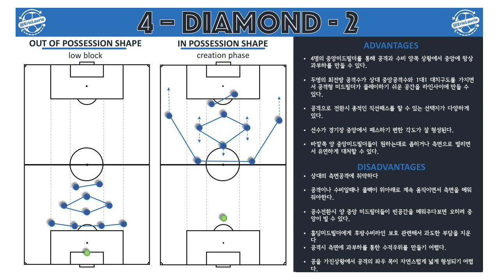

축잘알:축구에 관한 모든 것들
# 피라미드 (2-3-5)
# WM (2-3-2-3)
# MM (3-2-3-2)
# 3-3-4
# 4-2-4
# 3-4-3
# 3-5-2
# 4-2-2-2
# 4-2-3-1
# 4-3-3
# 4-4-2
# 4-diamond-2
#4-diamond-2
4-4-2의 변칙전술이다. 측면보다 중앙 공격적인 성향을 가진다.
참조: Eric Laurie의 트위터
